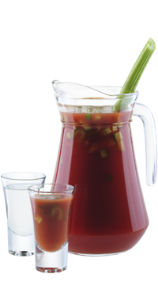

Сангрита — Стань мексиканцем!
В Мексике текилу чаще всего запивают сангритой — пикантной смесью овощного и фруктового соков, острых соусов и специй…
Легенда коктейля
В Мексике текилу чаще всего запивают сангритой — пикантной смесью овощного и фруктового соков, острых соусов и специй.
Считается, что этот коктейль придумала вдова Санчез Гваделупе, владевшая в 20-30-х годах ХХ века баром на популярном мексиканском курорте вблизи озера Чапала в штате Халиско. Лучше всего готовить сразу большой кувшин, чтобы угостить всю компанию.
- Как приготовить:
-
- Литрового кувшина сангриты хватит, чтобы запить 20 стопок текилы
- Налей в кувшин: апельсиновый сок 300 мл, томатный сок 600 мл и табаско соус 20 мл
- Выжми лайм 2 шт
- Добавь соль 1 ч/ложку и перец черный молотый 1 ч/ложку
- Размешай коктейльной ложкой
- Укрась стеблем сельдерея
- Разлей серебряную текилу по стопкам
- Разлей сангриту по стопкам
- Выпей текилу и запей сангритой